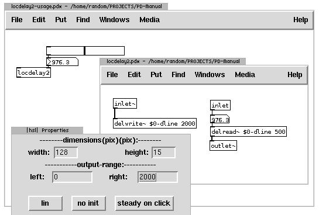
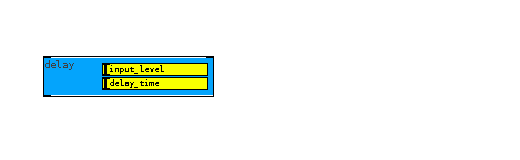
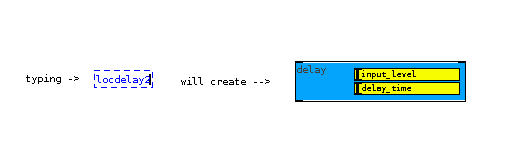
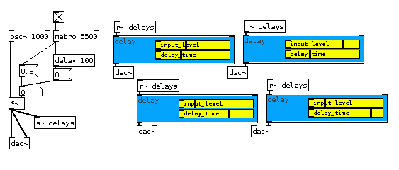

Graph on Parent
In Pure Data it is extremely easy to create interfaces that include sliders, buttons, number boxes, toggles, colored backgrounds... to see how to use them, look at the "GUI objects", or simply right-click on one of them and choose 'help'.
However, they still need to be connected and to use them away from the data inlets that they control, they have to be repeatedly created in order to function the way we want. Consider an example of a delay abstraction (already used above) that takes at it's second inlet a value for time of delay which we want to control with a slider:

So, every time when an abstraction like that is created, when it is desired to be controled by a slider, many steps are needed to recreate the same visual and programmatic construct. Luckily, there is a very powerful feature of Pd: graph-on-parent. It enables a subpatch or an abstraction to have a custom appearance at the parent 'calling' patch.
Instead of plain object box with the name of abstraction and arguments, it can have different size, colour, and all the gui object inside. Here's how it's done, continuing on delay: inside the abstraction or subpatch, rightclick on white underlying canvas and choose properties. Inside a dialog that appears, enable toggle for graph-on-parent: 
Applying this will create a grey-bordered box within the abstraction. This box represents the shape and form of the abstraction on the parent canvas (the calling patch). Whatever the size and contents of that grey box will be visible excluding connections, object boxes and message boxes. In the properties of the abstraction below the graph-on-parent option two rows of four values represent X and Y settings. Size will set the size of the box while margins will only set the position of that grey box within the abstraction. Adjusting these setting accordingly:

Inside the grey box it is now possible to create a suitable interface, according to users needs and aesthetic preferences needed for functional and pleasurable control of parameters. See properties of individual GUI objects (like canvas, slider, etc) and experiment what can be done with them. Simple delay abstraction in this case receives an underlying colour canvas and two sliders, one for delay-time and the other for incoming level:

While editing the abstraction with graph-on-parent, abstraction is greyed-out on the parent canvas until the abstraction window is closed. Only then the final appearance can be seen:

The purpose of a pixel wide transparent gap between the gray border and canvas in the abstraction is to reveal inlets and outlets at the parent window - however with sizing of inlaid canvas, even black borders can be hidden. Calling this abstraction as usual - by creating an object box and typing the name of abstraction without the extension .pd - will always instantly create this GUI:

that needs nothing more than to connect to audio signals and adjusting controls:
